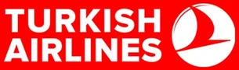

GAZLI SİSTEM
GAZLI SİSTEM
ProjelendirmeRisk analizi ve mühendislik
UygulamaUzman ekip, yüksek kalite
Teknik ServisKesintisiz destek
Gaz DolumYetkili ve güvenilir hizmet
7/24 DestekHer zaman yanınızda
MühendislikUluslararası standartlarda
Hizmet Verdiğimiz Sektörler
Tüm Sektörler
FENİX YANGIN
2011’DEN BUGÜNE RİSKİ SÖNDÜRÜYORUZ
Yangın güvenliği alanında mühendislik odaklı çözümler sunuyor, kritik alanların kesintisiz korunması için çalışıyoruz.
Kurumsalımız
MÜHENDİSLİK ODAKLI YAKLAŞIM
ULUSLARARASI STANDARTLARA UYGUNLUK
KESİNTİSİZ DESTEK
SÜRDÜRÜLEBİLİR YANGIN GÜVENLİĞİ
15+
Yıllık Deneyim
500+
Tamamlanan Proje
7/24
Teknik Destek
1000+
Mutlu Müşteri
Öne Çıkan Projeler
Tüm Projeler →Teknik İçerikler / Blog
Tüm Yazılar →Referanslarımız
Tüm Referanslar →
Kamu kurumları, savunma ve endüstride 80+ doğrulanmış kurumsal referans.